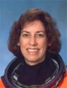

Lyndon B. Johnson Space Center
Houston, Texas 77058
|
National Aeronautics and Space Administration Lyndon B. Johnson Space Center Houston, Texas 77058 |
 |
Biographical Data |
||
Ellen Ochoa (Ph.D)
DIRECTOR, JOHNSON SPACE CENTER
PERSONAL DATA: Born in 1958 in Los Angeles, California, but considers La Mesa, California, to be her hometown. Married to Coe Fulmer Miles of Molalla, Oregon. They have two children. She is a classical flutist and private pilot, and also enjoys volleyball and bicycling. Ellen’s mother, Rosanne Ochoa, is deceased. Coe’s mother, Georgia Zak, is deceased. His stepfather, Louis Zak, resides in John Day, Oregon.
EDUCATION: Graduated from Grossmont High School, La Mesa, California, in 1975; received a Bachelor of Science Degree in Physics from San Diego State University in 1980, and a Master of Science Degree and Doctorate in Electrical Engineering from Stanford University in 1981 and 1985, respectively.
ORGANIZATIONS: Member of the Optical Society of America (OSA), the American Institute of Aeronautics and Astronautics (AIAA), Phi Beta Kappa and Sigma Xi honor societies.
SPECIAL HONORS: NASA awards include the Distinguished Service Medal, Exceptional Service Medal, Outstanding Leadership Medal, and four Space Flight Medals. Recipient of numerous other awards, including the Harvard Foundation Science Award, Women in Aerospace Outstanding Achievement Award, The Hispanic Engineer Albert Baez Award for Outstanding Technical Contribution to Humanity, the Hispanic Heritage Leadership Award, and San Diego State University Alumna of the Year. She is honored to have four schools named for her: the Ellen Ochoa Middle School in Pasco, Wash., the Ellen Ochoa Learning Center in Cudahy, Calif., the Ellen Ochoa STEM Academy at Ben Milam Elementary in Grand Prairie, Texas and the Amino Ellen Ochoa Charter Middle School in Los Angeles.
EXPERIENCE: As a doctoral student at Stanford, and later as a researcher at Sandia National Laboratories and NASA Ames Research Center, Dr. Ochoa investigated optical systems for performing information processing. She is a co-inventor on three patents for an optical inspection system, an optical object recognition method, and a method for noise removal in images. As Chief of the Intelligent Systems Technology Branch at Ames, she supervised 35 engineers and scientists in the research and development of computational systems for aerospace missions. Dr. Ochoa has presented numerous papers at technical conferences and in scientific journals.
Selected by NASA in January 1990, Dr. Ochoa became an astronaut in July 1991. Her technical assignments in the Astronaut Office include serving as the Crew Representative for flight software, computer hardware and robotics, Assistant for Space Station to the Chief of the Astronaut Office, lead Capsule Communicator (CAPCOM) in Mission Control, Acting Deputy Chief of the Astronaut Office, Deputy Director of Flight Crew Operations, and Director, Flight Crew Operations, where she managed and directed the Astronaut Office and Aircraft Operations. A veteran of four space flights, Dr. Ochoa has logged more than 978 hours in space. She was a mission specialist on STS-56 (1993), was the Payload Commander on STS-66 (1994), and was a mission specialist and flight engineer on STS-96 (1999) and STS-110 (2002). Dr. Ochoa currently serves as Director of the Lyndon B. Johnson Space Center in Houston, Texas.
SPACE FLIGHT EXPERIENCE: STS-56 ATLAS-2 Discovery (April 4 to April 17, 1993) was a 9-day mission during which the crew conducted atmospheric and solar studies to better understand the effect of solar activity on the Earth’s climate and environment. Dr. Ochoa used the Remote Manipulator System (RMS) robotic arm to deploy and capture the Spartan satellite, which studied the solar corona.
Dr. Ochoa was the Payload Commander on the STS-66 Atlantis Atmospheric Laboratory for Applications and Science-3 mission (November 3-14, 1994). ATLAS-3 continued the series of Spacelab flights to study the energy of the Sun during an 11-year solar cycle and to learn how changes in the Sun’s irradiance affect the Earth’s climate and environment. Dr. Ochoa used the RMS to retrieve the CRISTA-SPAS atmospheric research satellite at the end of its 8-day free flight.
STS-96 Discovery (May 27 to June 6, 1999) was a 10-day mission during which the crew performed the first docking to the International Space Station, and delivered 4 tons of logistics and supplies in preparation for the arrival of the first crew to live on the station. Dr. Ochoa coordinated the transfer of supplies and also operated the RMS during the 8-hour spacewalk.
STS-110 Atlantis (April 8 to April 19, 2002) was the 13th space shuttle mission to visit the International Space Station. Milestones during the 11-day mission included: the delivery and installation of the S0 (S-Zero) Truss; the first time the station’s robotic arm was used to maneuver spacewalkers around the station; and the first time that all of a space shuttle crew’s spacewalks were based from the station’s Quest Airlock. Dr. Ochoa, along with Expedition 4 crew members Dan Bursch and Carl Walz, operated the station’s robotic arm to install S0, and to move crew members during three of the four spacewalks.
MARCH 2014